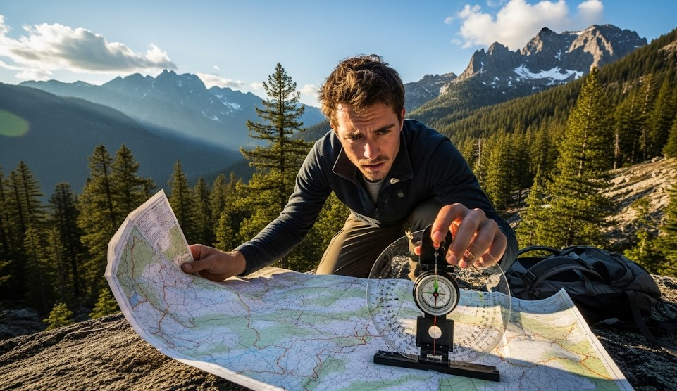

Resection & Triangulation: Finding Your Position
Objective
Fix your position without GPS by shooting bearings to known features and drawing lines back on the map.
Scenario (Example)
Example: Cloud cover blocked the sun; you’re somewhere on a ridge with two visible peaks and a lake.
Three-Point Triangulation
- Identify three distinct features on the map and terrain.
- Shoot magnetic bearings; correct for declination if needed.
- Plot back-bearings on the map; your position is near the triangle’s center.
Two-Point Resection
- Use two strong features (peak + lake outlet).
- Plot back-bearings; your location lies near their intersection.
Handrails & Backstops
Confirm with nearby ridgelines, streams, or roads to reduce error.
Real Example
Hikers found their location within 150 m by triangulating two peaks and a dam, then used the dam road as a handrail to camp.
Checklist
- Baseplate compass
- Pencil and straightedge
- Map case with declination info
Contingencies
- Poor visibility → wait for breaks; move to a known feature.
- Metal interference → step away 10–15 m and re-shoot.
After-Action
Practice plotting at home until it’s automatic in the field.
← Previous | All Articles | Next →